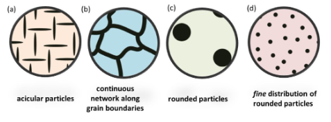
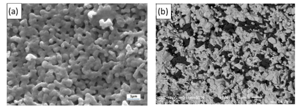
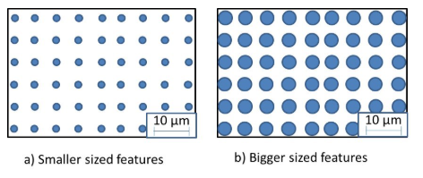
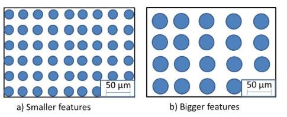
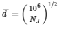
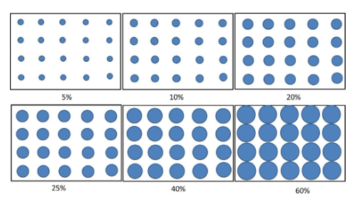
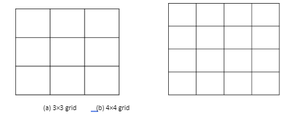
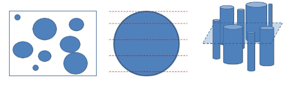
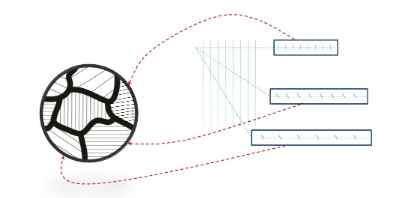

Feature Size measurement: Porosity, Grain, and Reinforcement
It may be noted that the size, content and distribution of the microstructural features decide the emanating properties of the bulk material. Thus, it is very important to be able to observe the feature shape, and estimate the feature size, and also be able to estimate the content of the second phase (which can be reinforcement or even porosity).
Identification of Features:
Video on Feature Size measurement:
Porosity, Grain, and Reinforcement

Fig. 1: Various features a) Acicular (needle-like), b) continuous phase along grain boundary, c) rounded coarse particles, and d) rounded fine particles reinforced in a matrix.
The dominating feature in the microstructure is matrix. Then, the second phase particles are the reinforcements or second phase particles that are deliberately formed or added in the matrix to make the material stronger (or provide enhanced performance). In the image below (Fig. 2a), the white feature is the matrix and the dark feature is the porosity, whereas in the Fig. 2b, the white feature is matrix, but the darker feature is the reinforcement. Figure 2a is secondary electron image, and the porosity (or sometimes even the second phase) may appear dark. So, in order to separate porosity from second phase, either a back-scatter electron image (Fig. 2b) can show the difference, or otherwise the focus-defocus of the dark-region (in SE mode if imaging) will also be able to differentiate the porosity from second phase region.

Figure 2: Electron micrograph showing: a) porosity in ceramic matrix, and b) second phase reinforcement in ceramic matrix. Note that both porosity and second phase features are appearing dark. Second phase features may appear brighter if the atomic number contrast is higher for reinforcement (say ceramic fibre reinforced in polymer matrix will appear brighter compered to matrix).
Calculation of Feature Size:
When the image is taken, the scale bar is more important feature than the amount of image-magnification. In order to obtain the feature size, the scale bar must be calibrated and then the length of the feature may be obtained. For example, if the scale of 10 µm is appearing to be 17.5 mm (for example), and the feature size is appearing ~4 mm, then the feature size is 4/17.5 = ~2.3 µm. Hence, the feature size can eb calculated by using the scale bar as the standard to estimate the feature size by the rule of similarity. Ensure that the aspect ratio of the image is ‘locked’, otherwise the features on the x-axis or y-axis may get stretched. This part is a serious issue, because the scale bar is presented along x-axis. So, with any stretching, the x-axis feature will retain their correct size, but estimations on y-axis will either get shortened or lengthened if the aspect ratio of the image changes. You may crop the image (that will not affect the estimate), but do ensure that the aspect ratio of image does not change.
Assuming the magnification of scale length is same, you may realize that the second phase feature may be smaller (Fig. 3a) or bigger (Fig. 3b). Thus, it is very important to be able to differentiate the feature-size. Keep first eye on the scale-bar to be able to appreciate the difference. In Fig. 3a, the features are 2.3 µm in diameter, whereas in Fig. 3b, the features are 4.2 µm in diameter.

Fig. 3: The second phase features are a) smaller, and b) bigger in size. Note that the scale bar is same. There is a possibility that the scale bar may be different if the images are taken at different magnifications.
A point to note here that the two images may be better taken at different magnification for presenting them to highlight the second phase feature. Nonetheless, the feature-size will not change even if we change the magnification.
Usually, the features may not be uniform as presented in examples above. Thus, in order to measure the feature size, the individual phases (or grains) can be measured against the provided scale-bar. A total of 100-150 readings must be collected in order to obtain a reliable statistical variation of the feature size. That feature can be a grain, or a porosity or even the second phase. Please note that the measurement of feature should be done in an unbiased manner, i.e. the measuring line-segment should NOT always be parallel or perpendicular to the horizontal axis. Thus, the feature must be measured across all angles. And enough number of images must be used to avoid any segregation effects (if any) in the sample. Once the data of the sizes is collected, the data set is to be arranged in ascending order, and then the distribution of feature size (or grain size) can be obtained. We will realize that there might be quite a variation in the values, so if features are of similar size, it is good to report an average value along with its standard deviation. In case the values are varying a lot, then it is good idea to show the histogram (and cumulative counts) with values of d10, d50 and d90, where ‘d’ is the feature size, and the subscript (10, 50 and 90) denotes the percent of particles (or features) that are below this value. This provides a good feel to appreciate the skewness or distribution in data.
Content of Second Phase:
In order to obtain the content (of phase fraction) of the second phase, idea is to get the net area of the second phase feature and then divide that by the total area of the image. In Fig. 4a, the feature size (or diameter) of the second phase is 20.3 µm, whereas the feature size (diameter) of second phase is 33.4 µm in Fig. 4b. But, the phase fraction of the second phase is 0.309 (or multiply by 100 to get volume percent, i.e. 30.9%) in both the cases.

Figure 4: The fraction of phases will depend on the total area covered by the second phase irrespective whether the size of feature is a) smaller, or b) bigger. The number of features will decide the dispersion quality of the second phase.
ASTM Grain Size Calculation:
The ASTM Grain Size (n) can be calculated by the following equation:
N=2n−1
where N is the number of grains at 100× magnification in a 1 in2 (or 645.2 mm2) area. If the image is captures at any other magnification (say 500× instead of 100×), then the image is magnified five times along x-axis and five times along y-axis, so the total area is reduced by 25 times. Accordingly, the number of grains at 200× will need to be multiplied by ‘25’ to obtain N (i.e. the number of grains at 100× in 1 in2 area). Accordingly, then, the value of ‘n’ (or ASTM grain size) can be calculated.
Jeffries Grain Size Calculation:
Jeffries grain size calculation method involves drawing a circle of diameter 79.8 mm (area of 5000 mm2) and calculating the number of grains in that circle. Magnification (M) is selected as to get typically ~50 grains in the circle. If a grain completely falls within, it is counted as ‘1’, and if some area falls outside, then it is counted as ‘½’ contribution. After the cumulative count is obtained (n), the number of grains per mm2 (NJ) is be obtained as:
NJ=M2/5000 * n
Where M is the magnification, n is the total number of grains in the circle, and NJ is the number of grains per mm2. The number 5000 is appearing as hat is the total area (i.e. 5000 mm2) in which the grains are being counted. Also, the magnification M is being squared because it changes the length both along x-axis and y-axis. Thus, in order to calculate the grain size (which is typically in the units of µm), the average size of grain,
d′, (in µm) can be obtained as:

Even a better version of calculating the feature size is observing the ‘distribution’ of features. In most cases, the second-phase feature size may vary (and may not be the same at all the places), so it will be better to observe the feature size with statements of d10 (i.e. 10% of features are less than this size), or d50 (i.e. 50 % features are of this size or less), and d90 (90% of features are of this size or less). But, that can be performed using image analysis software. Please check your estimates with the equations provided here for comparisons (mainly d50).
Estimating Content of Phase:
If the number of features is kept constant (say 20 in the in the schematics), then the content of phase can be qualitatively adjudged from Figure 5. Again, it can be obtained by calculating the area of each circle, then multiplying it by the number (20 here) to get the total coverage area. Then divide this area by the total area of the box (or image) and multiply by 100 in order to obtain the volume percent of the second phase. You may also note that the scale bar is NOT being put in these schematics when the phase fraction or volume content is being calculated. Irrespective of scale bar, the phase fraction would remain the same.

Fig. 5: The content of second phase may qualitatively be perceived in the range of 5-60%. Note that the continuity of phases may even arise when there are fibers (even as low as 10%). Here a particulate feature is being presented and the size o the second phase is not varying in each image.
In reality, there might be distribution of particle size even in a single sample, and qualitative assessment of both size and content becomes important.
Here, a word of caution is to be exercised. Note that the selection of area and number of features is very important. If one just zooms up the image to get only ONE feature, and then applying this area coverage, then that phase may cover-up the entire image, and the calculation will provide the fraction of phase as 100%, which is NOT current. So, it is very important to choose appropriate region and appropriate magnification so as to obtain ‘representative’ region, and the ‘enough number of images’ must be utilized to collate the date to make it ‘statistically significant’. Typically, 5-8 images may be taken, with each image with ~50 features to be able to provide relevant numbers. Again, please note that these numbers are an ‘estimate’ and user-dependent (depending on selection of region or magnification), so enough care must be taken to ensure that the reported values are near to the real values.
Estimation of Fraction of Second Phase:
Again, the content of phases can be obtained by image analysis software. But, here a point count method is being provided to estimate the content of second phase. Here, typically a 3×3 grid (Fig. 6a) or 4×4 grid (Fig. 6b) is kept on the obtained image (it has to be kept randomly without any bias of trying to include a feature or trying to align the grid parallel or perpendicular to the boundaries). Then count the features that fall on the grid points and take a count. Then divide the number of points falling on the grid to the total number of points of the grid. For 3×3 grid, we have 16 points, whereas for 4×4 grid, we have 25 points. Repeat the process for enough number of times (>15-20 times) to get an estimate of fraction of second phase. It must be ensured that the feature is not magnified to the extent that most of grid points fall in that region, and the estimations will be incorrect. So, choose appropriate magnification of the image, and choose appropriate grid (3×3 or 4×4 grid) so that the features size is much smaller compared to the cell size. Do the measurements unbiased, i.e. the grid should neither fall deliberately parallel or perpendicular to horizontal axis, nor should the grid point be made to fall on the feature. The keeping of the grid must be random! For each measurement, divide the total number of points that fell on feature to the total number of grid points. Then after a few (15-20) measurements take an average, which will be near to the average content of the second phase.
It must be ensured that the feature is not magnified to the extent that most of grid points fall in that region, and the estimations will be incorrect. So, choose appropriate magnification of the image, and choose appropriate grid (3×3 or 4×4 grid) so that the features size is much smaller compared to the cell size. Do the measurements unbiased, i.e. the grid should neither fall deliberately parallel or perpendicular to horizontal axis, nor should the grid point be made to fall on the feature. The keeping of the grid must be random! For each measurement, divide the total number of points that fell on feature to the total number of grid points. Then after a few (15-20) measurements take an average, which will be near to the average content of the second phase.
Compare these numbers for the images with the one obtained from software.

Fig. 6: Typical a) 3×3 grid and b) 4×4 grid used for estimating the fraction of second phase from point-count method.
Precautions:
1.Lock the aspect ratio. Otherwise the features will get stretched or shortened in the other direction, and values will come out to be incorrect.
2.Do not over interpret. If you obtain the image showing circles (Fig. A1), then do not assume that the feature is a ‘sphere’. The features could have been either be sphere (Fig. A2) or aligned cylinders (Fig. A3). We must obtain the cross-sectional image to be able to ensure the 3-D feature of the same. So, the confirmation requires also imaging the cross-section and then making interpretations.

A1) Image of circular features A2) 3-D profile may be sphere A3) 3-D profile may be cylinder
Fig. A1) Image may appear showing circular features, which may belong to A2) 3-D shape of spherical feature, or even A3) aligned cylindrical features. So, we should learn not to over-interpret the results.
A1) Image of circular features A2) 3-D profile may be sphere A3) 3-D profile may be cylinder
3.Feature length depends upon sectioning location as well. For example, in a lamellar structure, the ‘angle of cut’ during sectioning may show different spacing between the lamellae (such as in pearlite, Fig. A4), because cuts are NOT perpendicular to each grain in that region. So, we should be careful in not to over-interpret the results.

Fig. A4: The non-perpendicular section of lamellas (or parallel features) may appear as lines with varying spacing.